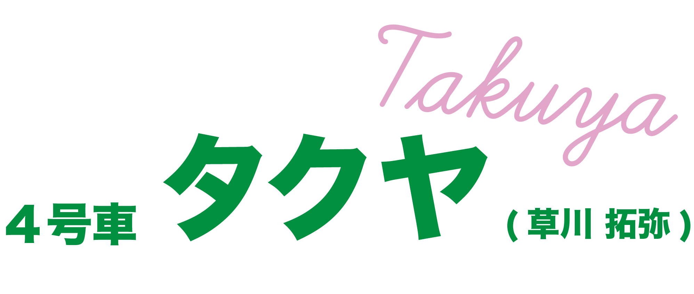

- ポジション：メインダンサー
- 担当：筋肉担当
- イメージカラー：緑
- 1994・11・24
俳優としても活躍し、“みどりの窓口乗車”急上昇中！
クールな雰囲気とは裏腹に、メンバーやファン思いなアツい漢
繊細なダンスとベビーフェイスな彼の笑顔に沼必至！
一桁のメインダンサータクヤくん！結成当初にとても鍛えていたことから筋肉担当に！今もバキバキの腹筋を持っていますが本人は担当を降りたいみたいです笑
超特急に加入する前から積極的に俳優活動をしており、メンバー１の演技派です。現在も絶えることなくドラマなどに出演し、知名度をどんどん広げている存在です。
タクヤくんの出演作を見てから超特急を知る人がかなり多く、メンバーカラーと相まって超特急のみどりの窓口と呼ばれています！
彼は基本的にクールな性格で、メンバーにも大体毒舌だったり、第一印象で怖がられることが多いらしいですが、詳しく知ってみると全然そんなことはありません！ メンバー(特に一桁)に毒舌なのは信頼の証ですし、超特急にいるということは変顔の破壊力もちゃんと高いです!実は1番壊れると面白いです笑
タクヤくんのチャームポイントは大きな目のベビーフェイスなところです！
ツボに入って大爆笑してる時の笑顔はすごく可愛くて、みているこっちまで笑顔になってしまいます☺️
タクヤくんのダンスは指先まで感情がこもっていて繊細なパフォーマンスなのが魅力です！
超特急の楽曲は曲ごとにセンターが変わるのですが、超特急の顔としてセンターを担うことが多いのがタクヤくんです。 主個人的には、素直な愛を届ける楽曲の表情管理がとても好きです。(おすすめな曲はSONGにまとめてます！) 主が実際にライブに乗車して、パフォーマンスを見た時に演技力の高さを感じられてとても惹き込まれました。
8号車のことも、メンバーのこともとても大切に思ってくれていて、アツい一面も持ち合わせています!
多くの魅力を併せ持つみどりの窓口からあなたも乗車してみませんか？？
公式の紹介ビデオです！
タクヤくんのセンター曲！ あなたに愛を込めてYELLを送ります💐
こちらもタクヤくんのセンター曲！
超特急の中でも随一の感動曲です
Youtubeチャンネルのおすすめ動画！
タクヤくんを思う存分楽しめます✨
Youtubeチャンネルのおすすめ動画もう一つ！
終始タクヤくん絶好調なので面白くて大好きです😂